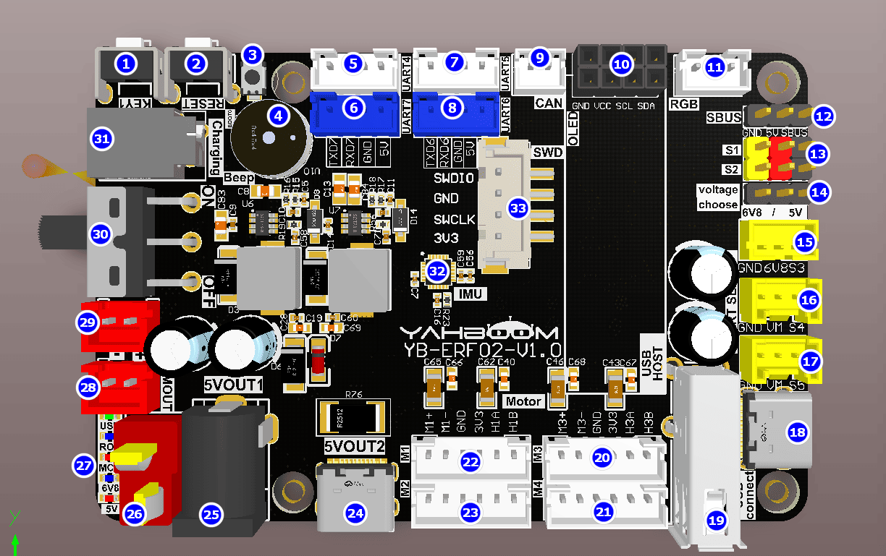
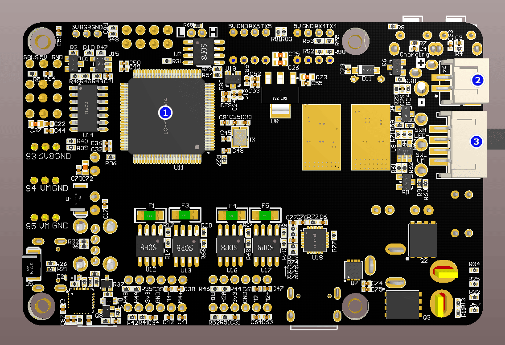
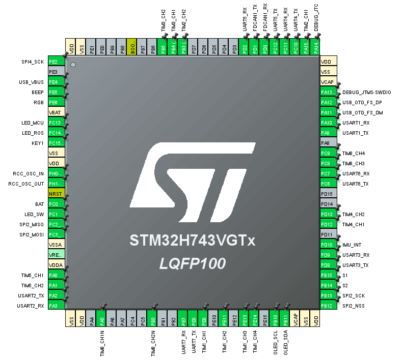

Знакомство с платой управления
- 1. Схема расположения компонентов на передней стороне плата управления
- 2. Схема расположения компонентов на задней стороне плата управления
- 3. Схема назначения выводов плата управления
- 4. Разбор часто задаваемых вопросов
1. Схема расположения компонентов на передней стороне плата управления

- Кнопка KEY1: пользовательская функциональная кнопка, назначение которой можно задать программно.
- Кнопка RESET: сброс микроконтроллера STM32.
- Кнопка BOOT0: используется для входа в режим прошивки при загрузке firmware STM32.
- Активный буззер: звуковой сигнал и сигнализация о низком заряде батареи.
- Разъём левого радара: последовательный порт 4, подключается к заднему левому радару.
- Отладочный интерфейс (Debug): последовательный порт 7, к нему можно подключить TTL-модуль для просмотра лог-сообщений.
- Разъём правого радара: последовательный порт 5, подключается к переднему правому радару.
- Управляющий интерфейс (Control): последовательный порт 6, к нему можно подключить TTL-модуль и отправлять протокол управления роботом.
- Интерфейс CAN: позволяет подключать устройства шины CAN и отправлять протокол управления роботом.
- Интерфейс OLED-экрана: позволяет отображать состояние платы.
- Интерфейс RGB-светодиодной ленты: отображает цветовые статусы через ленту.
- Интерфейс SBUS: подключение приёмника SBUS от пульта авиамодели.
- Интерфейс ШИМ-сервопривода (PWM servo): подключение ШИМ-сервопривода.
- Переключатель напряжения ШИМ-сервопривода: напряжение можно выбрать 5В или 6,8В.
- Интерфейс шинного сервопривода 6,8В: подключение шинного сервопривода на 6,8В.
- Интерфейс шинного сервопривода 12В: подключение шинного сервопривода на 12В.
- Интерфейс шинного сервопривода 12В: подключение шинного сервопривода на 12В.
- Интерфейс прошивки и связи: последовательный порт TYPE-C для прошивки MCU и передачи данных.
- Интерфейс геймпада: подключение USB-геймпада.
- Мотор M3: подключается к переднему правому мотору робота.
- Мотор M4: подключается к заднему правому мотору робота.
- Мотор M1: подключается к переднему левому мотору робота.
- Мотор M2: подключается к заднему левому мотору робота.
- Выходной интерфейс Type-C 5В: выход 5,1В/5А, с проприетарным протоколом Raspberry Pi.
- Выходной интерфейс DC 5В: обеспечивает выходное напряжение 5В.
- Входной интерфейс питания T-типа DC 12В: подключение источника питания 12В для питания материнской платы.
- Светодиодный индикатор: отображает напряжение и функциональное состояние.
- Выход DC12В: обеспечивает выходное напряжение 12В.
- Выход DC12В: обеспечивает выходное напряжение 12В.
- Выключатель питания: управляет питанием всей платы. Переведите переключатель в положение OFF для выключения платы и в положение ON для включения.
- Разъём зарядки: порт зарядки на 12,6В.
- Девятиосевой датчик ориентации: включает трёхосевой акселерометр, трёхосевой гироскоп и трёхосевой магнитометр.
- Интерфейс отладки SWD: пользователи могут использовать ST-LINK для отладки.
2. Схема расположения компонентов на задней стороне плата управления

- Микроконтроллер STM32: основная микросхема, управляющая работой всех функций платы.
- Разъём зарядки: порт зарядки на 12,6В.
- Интерфейс самофиксирующегося выключателя: позволяет подключить внешний самофиксирующийся выключатель для управления включением/выключением всей платы.
3. Схема назначения выводов плата управления

| Периферийное устройство | Выводы | Примечание |
|---|---|---|
| Активный буззер | PE5 | Обычный GPIO |
| RGB-светодиодная лента | PE6 | SPI4_MOSI (SPI4_SCK — тактовый сигнал SPI4, не требуется и оставлен неподключённым) |
| Индикатор LED_MCU | PC13 | Обычный GPIO, индикатор состояния |
| Индикатор LED_ROS | PC14 | Обычный GPIO, индикатор состояния ROS |
| Кнопка KEY1 | PC15 | Обычный GPIO, вход с подтяжкой вверх (pull-up) |
| Кварцевый резонатор 25 МГц | PH0/PH1 | |
| Детектор напряжения батареи BAT | PC0 | Измерение через АЦП |
| Индикатор LED_SW | PC1 | Обычный GPIO, индикатор переключателя |
| Датчик ориентации IMU | PC2/PC3/PB13/PB12/PD10 | SPI2 — MISO/MOSI/SCK/NSS/INT |
| Энкодер мотора M3 | PA0/PA1 | Режим энкодера, таймер 5, каналы 1 и 2 |
| Интерфейс SBUS | PA3 | Вывод приёма последовательного порта 2 (PA2 — вывод передачи порта 2, не требуется и оставлен неподключённым) |
| Драйвер мотора M3 | PA5/PB0 | Режим ШИМ, таймер 8, каналы 1N и 2N |
| Отладочный интерфейс | PE7/PE8 | Последовательный порт 7, вывод лог-сообщений |
| Драйвер мотора M2 | PE9/PE11 | Режим ШИМ, таймер 1, каналы 1 и 2 |
| Драйвер мотора M1 | PE13/PE14 | Режим ШИМ, таймер 1, каналы 3 и 4 |
| OLED-дисплей | PB10/PB11 | Интерфейс I2C |
| ШИМ-сервопривод S1 | PB15 | Таймер 12, канал 2 |
| ШИМ-сервопривод S2 | PB14 | Таймер 12, канал 1 |
| Шинный сервопривод | PD8/PD9 | Последовательный порт 3 |
| Энкодер мотора M4 | PD12/PD13 | Режим энкодера, таймер 4, каналы 1 и 2 |
| Управляющий интерфейс | PC6/PC7 | Последовательный порт 6 |
| Драйвер мотора M4 | PC8/PC9 | Режим ШИМ, таймер 8, каналы 3 и 4 |
| Интерфейс прошивки и связи | PA9/PA10 | Последовательный порт 1 |
| Интерфейс USB-геймпада | PA11/PA12 | USB Host |
| Интерфейс SWD | PA13/PA14 | SWDIO/SWCLK |
| Энкодер мотора M2 | PA15/PB3 | Режим энкодера, таймер 2, каналы 1 и 2 |
| Интерфейс левого радара | PC10/PC11 | Последовательный порт 4 |
| Интерфейс правого радара | PC12/PD2 | Последовательный порт 5 |
| Интерфейс CAN | PD0/PD1 | |
| Энкодер мотора M1 | PB4/PB5 | Режим энкодера, таймер 3, каналы 1 и 2 |
4. Разбор часто задаваемых вопросов
1. Как основная вычислительная платформа (например, Jetson Nano) управляет платой управления? Как происходит обмен данными с платой управления?
Ответ: заводская прошивка плата управления включает в себя программу на базе фреймворка micro-ROS. Jetson Nano подключается к плата управления через интерфейс USB Connect, запускает агент micro-ROS и отправляет соответствующие команды-топики. Микроконтроллер, встроенный в плата управления, принимает и разбирает данные, а затем выполняет конкретные команды.
2. Как питается робот? Нужен ли основной вычислительной платформе отдельный источник питания?
Ответ: в комплекте с роботом идёт аккумуляторный блок. Подключите аккумуляторный блок к разъёму питания DC 12В T-типа на плата управления и включите основной выключатель питания. На плата управления встроена микросхема преобразования напряжения. Для материнской платы Jetson Nano питание подаётся через кабель DC 5В. Для Raspberry Pi 5 питание подаётся через кабель Type-C 5В с проприетарным протоколом. Для серии Jetson Orin питание подаётся через кабель выхода DC 12В.
3. Как обновить прошивку MCU? Зачем нужно обновлять прошивку MCU?
Ответ: MCU, встроенный в плата управления, поставляется с предустановленной заводской прошивкой. Обновлять прошивку не требуется, если в этом нет необходимости. Если обновление прошивки всё же нужно, обратитесь к руководству по обновлению прошивки MCU. Если на плата управления уже загружен отдельный hex-файл, перед запуском примеров ROS необходимо сначала перезаписать заводскую прошивку.